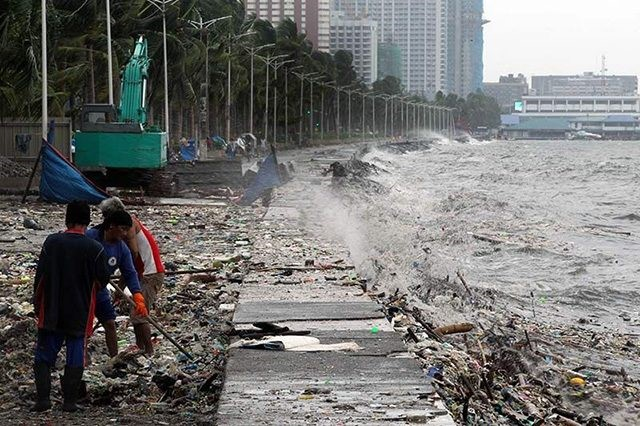
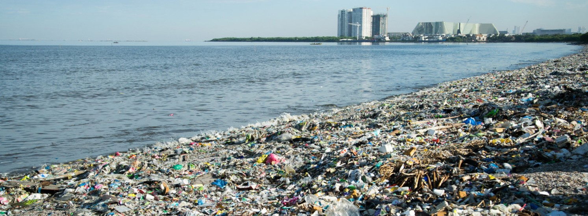

____________________________________________________________________________________________________________________________________________________________________________________________________________________________________________________________________
Is the waste problem in the Philippines really that significant?
____________________________________________________________________________________________________________________________________________________________________________________________________________________________________________________________________
 


These pictures tell you the answer. To put this into layman's term, Filipinos are using more plastics than the waste management
of the country can discard. Not only plastics, but all garbage in general. According to a 2015 study in the journal Science, the Philippines generates an enormous amount of trash and
is the third worst ocean plastic polluter in the world. According to a study done by World Bank, the Philippines consumes a staggering 163 million
pieces of sachets every day. This does not come as a surprise, as our country heavily depends on single use plastics. 3-in-1 Coffee mix,
Shampoos, Noodles, Chips, Biscuits etc. As we know, our country is still a developing country so
and most families are not that rich either so these plastics provide low-cost consumer goods to poor and middle-income families. Add to that the
fact that these single use plastics are easy to use and can be purchased by anyone, that is why it is accessible and which results in more usage.
Philippines is known for its 7,641 islands , which ranks eighth in all the countries around the world. These islands contain beautiful marine life,
and our garbage often end up in the oceans.